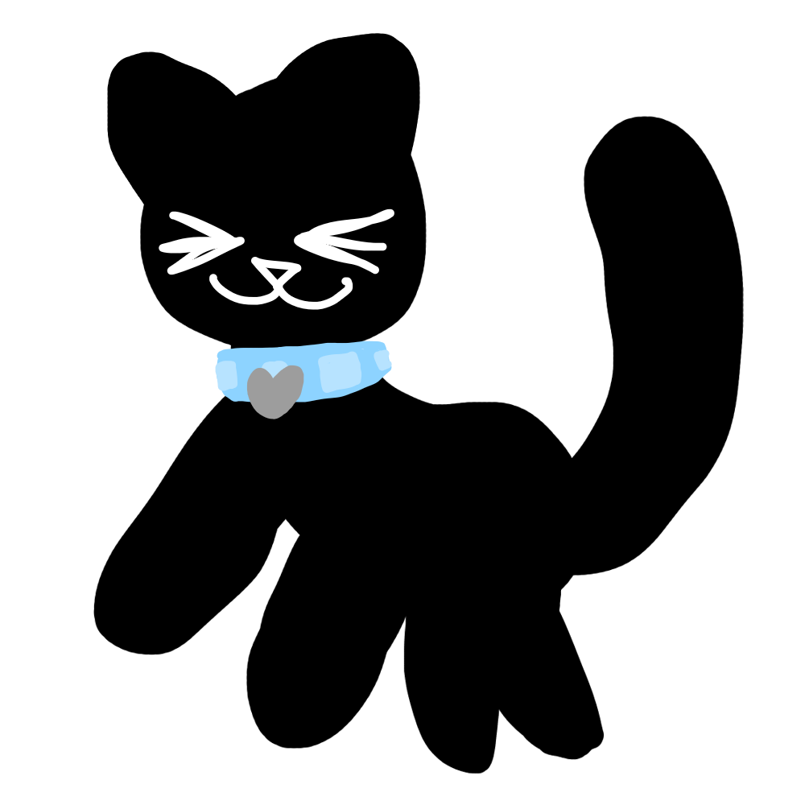

Introduction
Hello. Welcome one and all to my personal website. This is where I put silly little things and stuff. I haven't fully decided what I'm gonna put here, but we can go on that adventure together.
I've been really interested in web design, specifically web design that's more artsy and less corporate type boring stuff. As I keep this site going you're gonna be watching as I slowly learn how to make my sites less boring looking. It's annoying since all the tutorials I find just tell ya the very basics. I already know the basics, I wanna know how to make stuff look cool.
I made this website myself, so if some bits are a bit wonky then that's my fault. I'm gonna try to make this website accessible and mobile compatible, but if I fail at that then I'm sorry. I'm hoping to go to school for web development, so maybe after that my website will become better.
Also, here's a warning that there will probably be triggering things like cursing on this site. Things other than cursing will have trigger warnings before them so you can easily avoid them.
Here's a link to my neocities profile and the github repository for this site so you can tell me if I'm doing anything major wrong and where I'm doing that if ya want to.
What are the pages on this site?
Here's a list of each of the pages on this site and what they are about.
- About me: information about the creator of this website (me!)
- My ramblings: a blog section
- Other sites to check out: the title says it all. These are sites that I've found that I think are for sure worthy of being checked out.
- Credits: stuff I used to help me with this site.